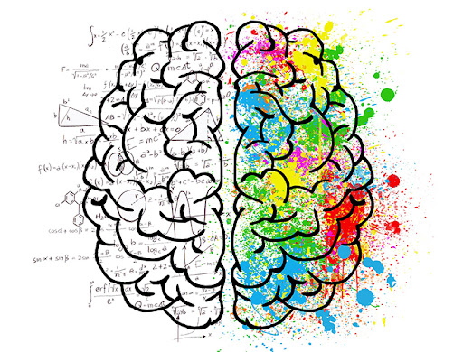

Implementa la base de cálculo y representación del sistema
LogicUS.
Basada en el paradigma funcional y la orientación Web con Elm.
Haciendo uso de litvis, una herramienta para la creación de documentos en la que se integran los elementos típicos de cualquier documentación (lenguaje Markdown), con el código Elm y las tecnologías de representación.
INSTALACIÓN EN WINDOWS INSTALACIÓN EN LINUX/MacOSUna Interfaz Web implementada en Elm (compilable a HTML y JS) y basada en los principios de usabilidad y explicabilidad, proporcionando una herramienta con la que los estudiantes puedan hacer uso directo de los métodos y algoritmos disponibles abstrayéndose de la sintáxis del lenguaje base.
ESTAMOS TRABAJANDO EN ELLAUna herramienta funcional y Web orientada a la enseñanza de la Lógica
La Lógica es un pilar fundamental en el desarrollo de todas las disciplinas informáticas, desde los aspectos orientados al hardware (diseño y verificación de circuitos), hasta el software (manejo de consultas de bases de datos, verificación formal de programas, etc.), y, sobre todo, en el campo de las Ciencias de la Computación y la Inteligencia Artificial.
El proyecto LogicUS constituye un sistema de apoyo a la enseñanza de la Lógica Computacional. El objetivo es proporcionar las herramientas necesarias, en diferentes niveles de abstracción, para el tratamiento de la Lógica orientada a la resolución de problemas en diferentes aspectos de la Lógica Proposicional (LP o PL) y de Primer Orden (LPO o FOL). Estas herramientas, basadas en el uso de la programación funcional y con una orientación web, proporcionan un conjunto de algoritmos operativos (tableros semánticos, DPLL, resolución, Herbrand, etc.),

así como las representaciones de las ejecuciones y resultados en diferentes formatos (tablas, gráficos, ...) específicamente diseñados para permitir la integración con otros sistemas y herramientas, en concreto para la generación de documentos exportables en diferentes formatos. Proporcionando un conjunto completo de herramientas para apoyar el desarrollo docente en Lógica Computacional de forma interactiva durante el desarrollo de sesiones teóricas, generación de documentación, prácticas y pruebas de evaluación.
El sistema LogicUS está diseñado para proporcionar una herramienta capaz de abordar los diferentes procesos involucrados en el aspecto docente (enseñanza, aprendizaje, evaluación,...) de forma modular, abierta, gratuita, ligera, e incluso colaborativa, para la enseñanza de la Lógica en el contexto de diferentes disciplinas científicas.